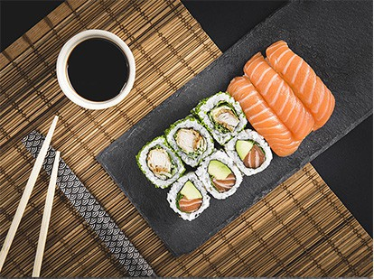

Lasagna recipe

Quick, healthy, crazy, easy peasy sushi
This sushi recipe tastes so fishing good that you can resist, it's wonderful.. you can do it by yourself if and only if you love asian dishes just like I do .. Actually it has been created specially for the non talented people who have nothing to do with cookin
Ingredients
- 6 sheets sushi seaweed aka nori
- 1 batch prepared sushi rice
- 1/2 lb sushi-grade raw salmon or desired raw fish of choice
- 1 cup salsa
- soy sauce
Steps
- Place the seaweed on a bamboo mat, then cover the sheet of seaweed with an even layer of prepared sushi rice. Smooth gently with the rice paddle.
- Layer salmon, cream cheese, and avocado on the rice, and roll it up tightly. Slice with a sharp knife, and enjoy with soy sauce.